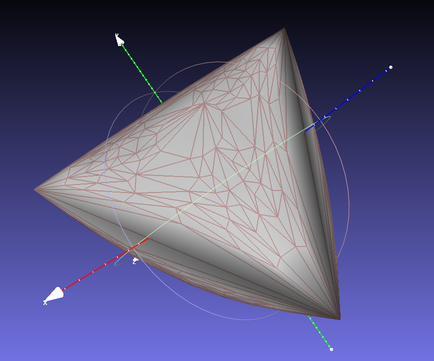
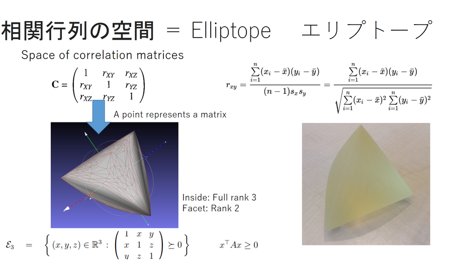
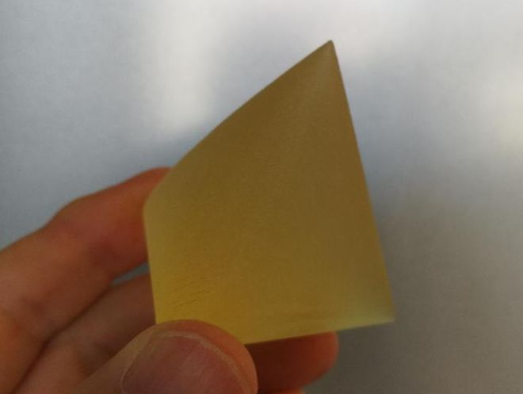

The space of correlation matrices (positive semi-definite matrices with unit diagonal) define a subset of the unit hypercube called the elliptope.


We can mesh the elliptope (finite sampling+convex hull) to create a STL file: elliptope3D.stl.
This meshed 3D elliptope can be opened using MeshLab, for example.
One slide explanation:
Some images of the printed elliptope (thanks to Alexis André for printing the STL file):
